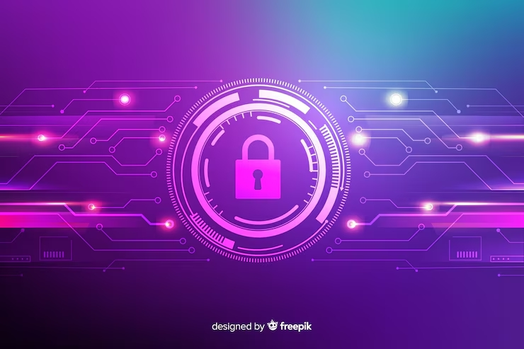

Les Opérateurs d’Importance Vitale (OIV) assurent des activités essentielles au fonctionnement de la Nation, dans des domaines tels que l’énergie, les transports, les télécommunications, l’eau ou la santé. Face à la multiplication des cybermenaces, la protection de leurs infrastructures et de leurs systèmes d’information constitue un enjeu majeur de sécurité. Mais comment identifier les risques et quelles mesures mettre en place pour assurer la sécurité et la continuité des activités des OIV ? Ce site présente les OIV, leur cadre réglementaire, le rôle de l’ANSSI, les SIIV, les principales menaces ainsi que les solutions techniques et organisationnelles permettant de les sécuriser.

Un Opérateur d'Importance Vitale (OIV) est une organisation publique ou privée désignée par l'État car elle exerce des activités indispensables à la survie de la Nation ou à la sécurité de la population.Le Code de la défense prévoit notamment que sont concernés les opérateurs dont les installations ou ouvrages, en cas de dommage, d'indisponibilité ou de destruction résultant notamment d'un acte de malveillance, de sabotage ou de terrorisme, pourraient affecter gravement le potentiel économique ou de défense, la sécurité ou la capacité de survie de la Nation, ou encore la santé ou la vie de la population. Un OIV n'est donc pas simplement une entreprise « importante ». Il s'agit d'un opérateur identifié par l'État en raison de l'importance de ses activités et des conséquences potentielles de leur interruption.
OLes OIV interviennent dans des secteurs regroupant des activités considérées comme indispensables. Le Code de la défense définit un secteur d'activités d'importance vitale comme un ensemble d'activités concourant à un même objectif et fournissant notamment des biens ou services indispensables aux besoins essentiels de la population, à l'exercice de l'autorité de l'État, au fonctionnement de l'économie, au maintien du potentiel de défense ou à la sécurité de la Nation. Parmi les domaines concernés, on retrouve notamment : Énergie : production et distribution d'électricité, de gaz ou de pétrole ; Eau : production et distribution d'eau potable ; Télécommunications : infrastructures et services de communication essentiels ; Transports : infrastructures et services nécessaires à la circulation des personnes et des marchandises ; Santé : infrastructures et activités essentielles à la prise en charge de la population ; Activités économiques et financières : certaines infrastructures indispensables au fonctionnement de l'économie ; Défense et sécurité : activités contribuant directement à la défense et à la sécurité nationale. La liste exacte des secteurs d'activités d'importance vitale est fixée par le Premier ministre par arrêté.
La désignation d'un OIV relève de l'autorité administrative. Pour chaque secteur d'activités d'importance vitale, les opérateurs sont désignés par un arrêté du ministre coordonnateur du secteur, après consultation des autorités compétentes.
Cette désignation entraîne des responsabilités particulières en matière de protection des installations et des systèmes nécessaires à l'activité de l'opérateur.
L'OIV est l'opérateur, public ou privé, qui exerce une activité d'importance vitale.
Il s'agit d'une installation ou d'un ouvrage utilisé dans le cadre de cette activité et dont l'endommagement, l'indisponibilité ou la destruction pourrait avoir des conséquences graves.
Un établissement, une installation ou un ouvrage répondant aux critères prévus par le Code de la défense peut être qualifié de Point d'Importance Vitale (PIV). Chaque OIV doit notamment établir une liste des PIV relevant de son activité.
Il ne faut pas confondre OIV et SIIV.
Un OIV est l'opérateur qui exerce une activité d'importance vitale.
Un SIIV (Système d'Information d'Importance Vitale) est un système d'information dont la sécurité est particulièrement importante pour la continuité de cette activité vitale.
Un SIIV peut par exemple participer à :
Cette distinction est essentielle pour comprendre la cybersécurité des OIV : protéger l'OIV implique notamment de protéger les systèmes d'information qui contribuent à ses activités vitales.
La dépendance croissante aux systèmes numériques augmente les conséquences potentielles d'une cyberattaque. Une attaque contre un système informatique peut, selon le contexte, entraîner la chaîne de conséquences suivante :
La protection des OIV repose donc sur plusieurs dimensions complémentaires :
La sécurité des SIIV est encadrée par la loi et le non-respect de certaines obligations peut entraîner des sanctions.
L'Agence Nationale de la Sécurité des Systèmes d'Information (ANSSI) pilote la défense cyber de la France.
Le centre de réponse aux incidents de l'État. Il gère la détection globale, la publication de bulletins d'alerte et l'assistance en cas de crise majeure affectant un OIV.
Un SIIV est identifié par l'OIV après analyse d'impact sur ses activités vitales.
La sécurisation d’un système d’information d’importance vitale (SIIV) repose sur plusieurs mécanismes complémentaires. L’objectif n’est pas seulement d’empêcher une attaque, mais également de limiter sa propagation, détecter les comportements anormaux, réagir rapidement et permettre la reprise de l’activité. Cette approche repose sur le principe de défense en profondeur.
Une architecture sécurisée sépare les différents niveaux du système afin de limiter les communications entre les zones. Une compromission d’un poste informatique ne doit pas permettre automatiquement d’atteindre les systèmes industriels.
La segmentation consiste à diviser l’infrastructure en plusieurs zones ayant des fonctions différentes à l'aide de VLAN, d'ACL et de pare-feux. Un VLAN (Virtual Local Area Network) permet de créer plusieurs réseaux logiques indépendants sur une même infrastructure physique afin de limiter le domaine de diffusion. voici un exemple ci-dessous
VLAN 10 — Administration : 192.168.10.0/24 VLAN 20 — Utilisateurs IT : 192.168.20.0/24 VLAN 30 — Serveurs : 192.168.30.0/24 VLAN 40 — OT : 192.168.40.0/24
Les ACL (Access Control Lists) et les pare-feux définissent les flux autorisés selon le principe du moindre privilège (adresse IP, port, protocole, application). Exemple de filtrage :
192.168.20.0/24 (IT) ──► FIREWALL ──► 192.168.40.0/24 (OT)
│
├── HTTPS vers serveur autorisé ──► AUTORISÉ
├── Service industriel requis ──► AUTORISÉ
└── Connexion non prévue ──► BLOQUÉ
La DMZ accueille les services exposés ou devant échanger entre différentes zones de confiance distinctes sans autoriser de flux direct entre Internet et le réseau interne critique.
INTERNET ──► FIREWALL ──► DMZ (Web, Relais) ──► FIREWALL INTERNE ──► RÉSEAUX INTERNES
Un bastion centralise, contrôle et chiffre les accès d'administration vers les équipements sensibles.
Poste administrateur ──► BASTION ──┬──► SCADA
├──► Serveurs
└──► Équipements réseau
S'appuie sur l'authentification multifacteur (MFA), la séparation des comptes utilisateurs et administrateurs, des comptes individuels nominatifs et une revue régulière des droits.
La prévention est complétée par une surveillance continue : analyse du réseau par des IDS et centralisation des journaux dans un SIEM pour détecter les anomalies.
Firewall ───────┐ Serveurs ───────┼──► SIEM ──► Analyse ──► Alerte Postes ─────────┤ IDS ────────────┘
Mise en place d'EDR, gestion des patchs, durcissement du système et stratégie de sauvegarde isolée (copie protégée/hors ligne avec tests de restauration réguliers).
DÉFENSE EN PROFONDEUR
UTILISATEURS
│
Authentification (MFA)
│
▼
POSTES IT
│
Protection / EDR
│
▼
RÉSEAU IT
│
VLAN / ACL
│
▼
DMZ
│
▼
FIREWALL IT/OT
│
▼
RÉSEAU OT
│
Supervision / IDS
│
▼
SCADA / AUTOMATES
Dans les infrastructures critiques, les systèmes informatiques de gestion (IT) coexistent avec l'informatique industrielle (OT) chargée du contrôle des processus physiques.
L’IT regroupe les technologies utilisées pour gérer, stocker et transmettre les informations d’une organisation.
L’OT désigne les technologies utilisées pour surveiller, contrôler ou automatiser des processus physiques et industriels.
Le contrôle strict des communications entre le monde IT et le monde OT est indispensable :
┌───────────────────────────────────────┐
│ RÉSEAU IT │
│ (Postes utilisateurs, ERP) │
└───────────────────┬───────────────────┘
│
▼
┌───────────────────────────────────────┐
│ FIREWALL IT / OT │
└───────────────────┬───────────────────┘
│
┌───────────────────┴───────────────────┐
│ RÉSEAU OT │
│ ┌─────────────────────┐ │
│ │ Système SCADA │ │
│ └──────────┬──────────┘ │
│ │ │
│ ┌──────────┴──────────┐ │
│ │ Automates │ │
│ └──────────┬──────────┘ │
│ │ │
│ ┌──────────┴──────────┐ │
│ │ Capteurs/Actionneurs│ │
│ └─────────────────────┘ │
└───────────────────────────────────────┘
| Critère | Informatique de Gestion (IT) | Informatique Industrielle (OT) |
|---|---|---|
| Priorité (Triade) | Confidentialité > Intégrité > Disponibilité | Disponibilité > Intégrité > Confidentialité |
| Équipements | Serveurs, PC, Switchs Ethernet standard | Automates (API/PLC), SCADA, Capteurs, IHM |
| Cycle de vie | 3 à 5 ans (mises à jour fréquentes) | 15 à 30 ans (correctifs complexes) |
| Impératif OIV | Isolation stricte : Empêcher une attaque provenant du réseau IT de traverser vers l'OT. | |
Voici la représentation en zones étanches avec cloisonnement par pare-feu :
INTERNET
│
▼
┌─────────────────┐
│ FIREWALL │
│ périmétrique │
└────────┬────────┘
│
▼
┌─────────────────┐
│ DMZ │
│ Services exposés│
└────────┬────────┘
│
▼
┌─────────────────┐
│ FIREWALL IT / OT│
└───────┬─────────┘
│
┌─────────────┴─────────────┐
▼ ▼
┌─────────────┐ ┌─────────────┐
│ IT │ │ OT │
│ VLAN / ACL │ │ VLAN / ACL │
└─────────────┘ └──────┬──────┘
│
┌──────┴──────┐
▼ ▼
SCADA Automates
│
Capteurs /
Actionneurs
La cybersécurité repose sur l'humain et les processus :
Sources officielles et réglementaires utilisées :